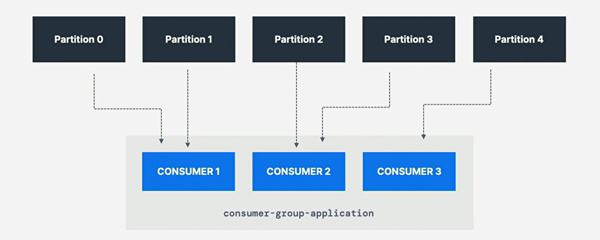
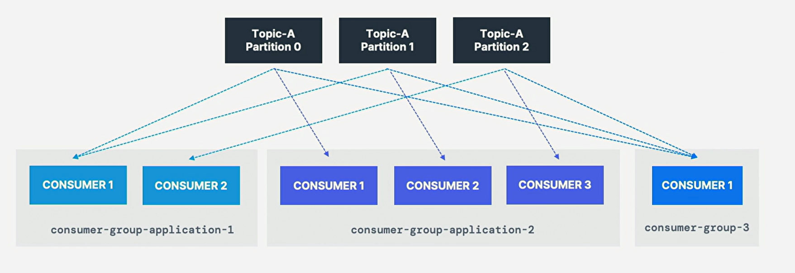

1. Group and Offset
-
Consumer Group and Consumer Offset
-
消费者可单独使用主题分区中的数据，但出于横向可扩展性
(horizontal scalability)的目的，建议将Kafka主题作为一个组使用；
2. Consumer Group

-
应用程序中所有消费者作为消费者组读取数据；
-
组内的每个消费者都从独占分区(exclusive partition)中读取；
-
属于同一应用程序并因此(therefore)执行相同
"logical job"的消费者可分组为一个Kafka消费者组； -
一个主题通常由许多分区组成(consists of)，
这些分区是Kafka消费者的一个并行单元(unit of parallelism)； -
利用消费者组的好处：该组中的消费者将协调从不同的分区中分割读取工作；
coordinate to split work of reading from different partition；
3. Consumer Group Id
-
指定消费者端设置group.id，以表明他们属于同一特定组；
-
Consumer自动使用GroupCoordinator和ConsumerCoordinater
将消费者分配到一个分区并确保在同一组中的所有消费者间实现负载平衡； -
注：每个主题分区只分配给消费者组种的一个消费者，但消费者组中一个消费者可分配多个分区；

-
同一主题有多个消费者组是可接受的；
-
消费者组1的消费者1已经被分配分区0和分区1，而消费者2被分配分区2和分区3，
只有消费者1从分区0和分区1接收消息，消费者2从分区2和分区3接收消息； -
从主题中读取的每个应用程序(可能由许多消费者组成)都必须指定一个
不同的group.id，意味多个应用程序(消费者组)可同时从同一主题中消费；
4. Consumer Inactive

-
消费者组：若消费者太多，多于分区，则一些消费者将处于不活动状态(inactive)；
-
通常，某消费者组中的消费者数量与分区数量一样多；
-
若想要更多的消费者获得更高的吞吐量，应在创建主题的同时
创建更多的分区，否则，一些消费者可能会保持不活跃状态；
5. Consumer Offset

-
kafka存储消费者组已读取的偏移量，
store offset at consumer group has been reading； -
提交的(commit)偏移量位于名为 __consumer_offsets 的主题中；
-
当组中消费者处理(process)完从kafka收到的数据时，它应定期提交偏移量，
kafka broker将写入 __consumer_offsets ，而不是组本身； -
periodically committing offset，kafka broker
write to __consumer_offsets,not group itself； -
若消费者死亡(die)，因提交的消费者偏移量，它将能够从上次停止的位置读回；
-
able to read back from where it left off
thanks to committed consumer offset -
kafka broker使用名为 \__consumer_offsets 的
内部主题来跟踪给定消费者组最后成功处理的消息； -
kafka主题中的每条消息都有一个partition Id和offset Id；
-
故为"checkpoint" 消费者对主题分区的读取程度，
消费者将定期提交(commit)最新处理的消息，也称消费者偏移量； -
如上图中消费者组中消费者已经消费高达便宜4262的消息；
6. Why Consumer Offset
-
偏移量对应用至关重要，若Kafka客户端崩溃crash，则发生重新平衡rebalance，
且最新提交的偏移量将帮助剩余的Kafka消费者知道在哪里重新开始读取和处理消息； -
若新的消费者被添加到一个组中，则会发生另一个消费者组的重新平衡，
且消费者偏移量再次被用来通知消费者从哪里始读取数据； -
yet again leveraged to notify consumer；
-
故必须定期提交消费者偏移量；
7. Delivery Semantic
-
Kafka broker将确保写入 \__consumer_offsets
主题(因此消费者不会直接写入该主题)； -
提交偏移量的过程并非针对所消耗的每一条消息进行(因这低效)，而是周期性的过程；
-
即当提交特定的偏移量时，所有先前具有较低偏移量的消息也被视为已提交；
-
当调用poll()时，每隔(默认5 ms) (auto.commit.interval.ms)，
自动提交偏移量 (enable.auto.commit=true)； -
默认，Java消费者将自动提交偏移量(at least once)，
若选择手动提交(enable.auto.commit=false)，则有三种投递语义；
7.1. At Least Once
-
至少一次，通常是首选(usually preferred)；
-
消息处理后提交偏移量，若处理出错，消息将被重新读取；
-
这将导致消息的重复处理，确保我们的处理幂等(idempotent)；
幂等：即再次处理消息不会影响我们的系统；
7.3. Exactly Once
-
精确一次
| Entry | Memo |
|---|---|
kafka ⇒ kafka workflow |
use transactional api， |
kafka ⇒ external system workflow |
use idempotent consumer |
-
这只能使用事务Api来实现Kafka主题到Kafaka主题的工作流时，
启用精确一次，Kafka Stream Api简化Api的使用；
processing.guarantee=exactly_once_v2； Kafka < 2.5 -
对于Kafka主题到外部系统的工作流，要有效地(effectively)
实现精确一次，必须使用幂等(idempotent)消费者； -
在实践中，对Kafka消费者来说，至少一次幂等处理是
最理想(desirable)和最广泛(widely)实现的机制；